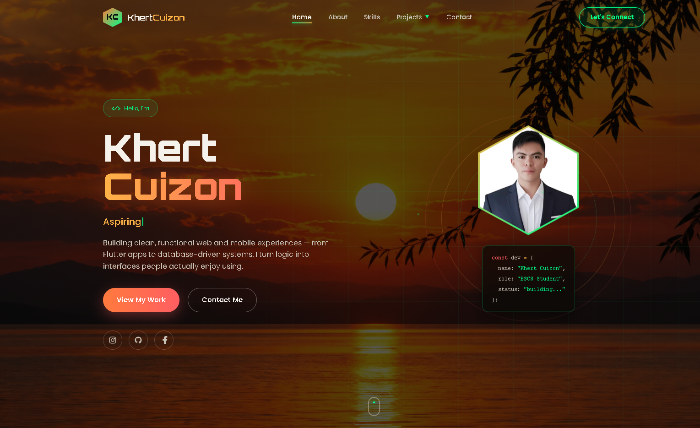
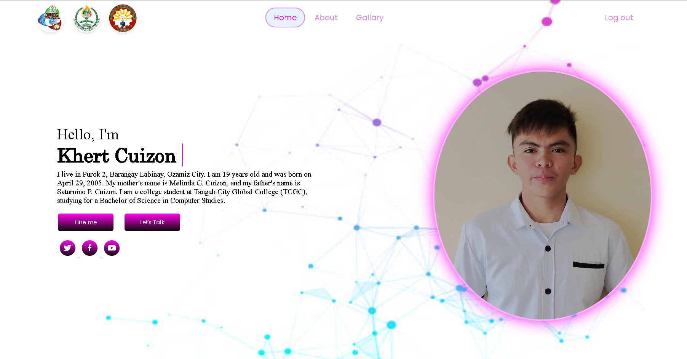
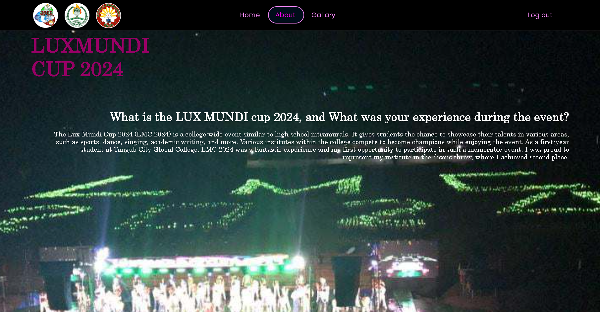
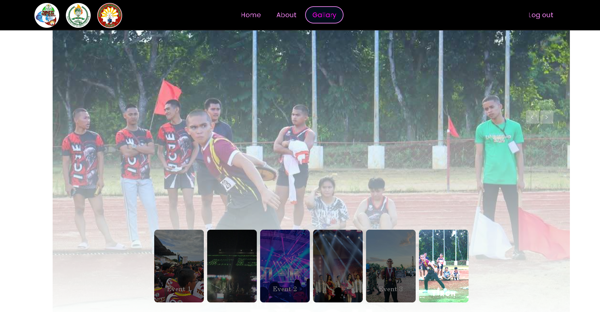

← Back to Services
Web Development
My Web Development Projects
These are websites I created using HTML, CSS, JavaScript, and GitHub Pages.
PROJECT 01
Current Portfolio
Portfolio Website
I built this responsive portfolio using HTML, CSS, and Vanilla JavaScript. It presents my skills, services, projects, and contact information.
Visit My Portfolio
PROJECT 02
My First Portfolio
My First Portfolio
My first personal portfolio introduced my profile and featured my LUX MUNDI Cup 2024 experience and event gallery. This project helped me practice building and publishing a complete website.
Visit My First Portfolio

